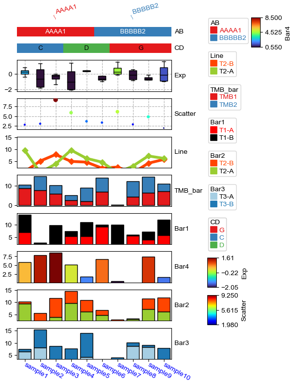
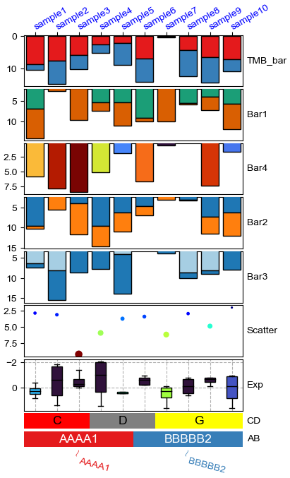

[12]:
import os,sys
%matplotlib inline
import matplotlib.pylab as plt
import pickle
plt.rcParams['figure.dpi'] = 100
plt.rcParams['savefig.dpi']=300
# sys.path.append(os.path.expanduser("~/Projects/Github/PyComplexHeatmap"))
from PyComplexHeatmap import *
Generate dataset¶
[13]:
#Generate example dataset (random)
df = pd.DataFrame(['GroupA'] * 5 + ['GroupB'] * 5, columns=['AB'])
df['CD'] = ['C'] * 3 + ['D'] * 3 + ['G'] * 4
df['EF'] = ['E'] * 6 + ['F'] * 2 + ['H'] * 2
df['F'] = np.random.normal(0, 1, 10)
df.index = ['sample' + str(i) for i in range(1, df.shape[0] + 1)]
df_box = pd.DataFrame(np.random.randn(10, 4), columns=['Gene' + str(i) for i in range(1, 5)])
df_box.index = ['sample' + str(i) for i in range(1, df_box.shape[0] + 1)]
df_bar = pd.DataFrame(np.random.uniform(0, 10, (10, 2)), columns=['TMB1', 'TMB2'])
df_bar.index = ['sample' + str(i) for i in range(1, df_box.shape[0] + 1)]
df_scatter = pd.DataFrame(np.random.uniform(0, 10, 10), columns=['Scatter'])
df_scatter.index = ['sample' + str(i) for i in range(1, df_box.shape[0] + 1)]
df_heatmap = pd.DataFrame(np.random.randn(30, 10), columns=['sample' + str(i) for i in range(1, 11)])
df_heatmap.index = ["Fea" + str(i) for i in range(1, df_heatmap.shape[0] + 1)]
df_heatmap.iloc[1, 2] = np.nan
Add selected rows labels¶
[14]:
#Annotate the rows with average > 0.3
df_rows = df_heatmap.apply(lambda x:x.name if x.sample4 > 0.5 else None,axis=1)
df_rows=df_rows.to_frame(name='Selected')
df_rows['XY']=df_rows.index.to_series().apply(lambda x:'A' if int(x.replace('Fea',''))>=15 else 'B')
row_ha = HeatmapAnnotation(
Scatter=anno_scatterplot(df_heatmap.sample4.apply(lambda x:round(x,2)),
height=12,cmap='jet',legend=False),
Bar=anno_barplot(df_heatmap.sample4.apply(lambda x:round(x,2)),
height=15,cmap='rainbow',legend=False),
selected=anno_label(df_rows,colors='red',relpos=(-0.05,0.4)),
label_kws={'rotation':30,'horizontalalignment':'left','verticalalignment':'bottom'},
axis=0,verbose=0)
col_ha = HeatmapAnnotation(label=anno_label(df.AB, merge=True,rotation=10),
AB=anno_simple(df.AB,add_text=True),axis=1,
CD=anno_simple(df.CD,add_text=True),
EF=anno_simple(df.EF,add_text=True,
legend_kws={'frameon':True}),
G=anno_boxplot(df_box, cmap='jet',legend=False),
verbose=0)
plt.figure(figsize=(5.5, 6.5))
cm = ClusterMapPlotter(data=df_heatmap, top_annotation=col_ha,right_annotation=row_ha,
col_cluster=True,row_cluster=True,
col_split=df.AB,row_split=2,
col_split_gap=0.5,row_split_gap=0.8,
label='values',row_dendrogram=True,
show_rownames=False,show_colnames=True,
tree_kws={'row_cmap': 'Set1'},verbose=0,legend_gap=5,
cmap='RdYlBu_r',xticklabels_kws={'labelrotation':-90,'labelcolor':'blue'})
plt.savefig("example0.pdf", bbox_inches='tight')
plt.show()

Add float annotations on the top of heatmap cells¶
[15]:
#Annotate the rows with average > 0.3
df_rows = df_heatmap.apply(lambda x:x.name if x.sample4 > 0.5 else None,axis=1)
df_rows=df_rows.to_frame(name='Selected')
df_rows['XY']=df_rows.index.to_series().apply(lambda x:'A' if int(x.replace('Fea',''))>=15 else 'B')
row_ha = HeatmapAnnotation(S4=anno_simple(df_heatmap.sample4.apply(lambda x:round(x,2)),
add_text=True,height=10,
text_kws={'rotation':0,'fontsize':10,'color':'black'}),
# Scatter=anno_scatterplot(df_heatmap.sample4.apply(lambda x:round(x,2)),
# height=10),
Test=anno_barplot(df_heatmap.sample4.apply(lambda x:round(x,2)),
height=18,cmap='rainbow'),
selected=anno_label(df_rows,colors='red'),
axis=0,verbose=0,label_kws={'rotation':0,'horizontalalignment':'left','verticalalignment':'bottom'})
col_ha = HeatmapAnnotation(label=anno_label(df.AB, merge=True,rotation=15),
AB=anno_simple(df.AB,add_text=True),axis=1,
CD=anno_simple(df.CD,add_text=True),
EF=anno_simple(df.EF,add_text=True,
legend_kws={'frameon':False}),
Exp=anno_boxplot(df_box, cmap='turbo'),
verbose=0) #verbose=0 will turn off the log.
print(df)
print(df_box.mean(axis=1))
print(df_heatmap)
plt.figure(figsize=(6, 8))
cm = ClusterMapPlotter(data=df_heatmap, top_annotation=col_ha,right_annotation=row_ha,
col_split=df.AB,
row_split=df_rows.XY, col_split_gap=0.5,row_split_gap=1,
col_cluster=True,row_cluster=True,
label='values',row_dendrogram=False,show_rownames=True,show_colnames=True,
tree_kws={'row_cmap': 'Set1'},verbose=0,legend_gap=7,
annot=True,linewidths=0.05,linecolor='gold',cmap='RdYlBu_r',
xticklabels_kws={'labelrotation':-45,'labelcolor':'blue'})
plt.show()
print(cm.row_order)
print(cm.col_order)
AB CD EF F
sample1 GroupA C E 2.457956
sample2 GroupA C E 1.151167
sample3 GroupA C E -0.940841
sample4 GroupA D E -0.186487
sample5 GroupA D E 0.607333
sample6 GroupB D E -1.529482
sample7 GroupB G F 0.563582
sample8 GroupB G F -1.682889
sample9 GroupB G H 0.603496
sample10 GroupB G H 0.961501
sample1 -0.277094
sample2 0.825898
sample3 1.090659
sample4 0.222335
sample5 -0.382335
sample6 -0.654653
sample7 -0.066323
sample8 0.580080
sample9 0.291279
sample10 -0.109493
dtype: float64
sample1 sample2 sample3 sample4 sample5 sample6 sample7 \
Fea1 -2.526145 0.091290 -0.199772 0.813994 -0.914805 0.189657 -0.973893
Fea2 -0.854871 -0.649875 NaN 0.140280 -0.309826 -0.146999 -1.081476
Fea3 -0.041260 0.570978 0.148533 0.602792 1.215375 -0.187857 -0.266431
Fea4 0.011319 1.790945 1.504599 0.393744 -1.119861 0.461823 1.225910
Fea5 -1.727152 0.341438 0.224700 -0.277870 -0.630769 -0.337226 -0.974951
Fea6 -0.007976 -2.277362 1.148150 0.913423 -2.225546 -1.472275 -0.251631
Fea7 0.100383 1.293906 2.495606 1.390204 0.535852 2.281815 1.000498
Fea8 -0.488381 -0.601516 1.574525 -1.446854 0.063471 0.764223 0.068910
Fea9 1.303638 -0.123384 1.729767 -0.327764 0.512777 0.185542 1.118778
Fea10 -1.756508 2.015516 0.322184 0.410537 -0.271760 0.420540 0.714666
Fea11 -1.426994 0.388407 -0.263180 -0.584027 1.051421 -0.351782 -0.137388
Fea12 0.057901 0.851772 1.019733 -2.220346 -0.797931 -0.826223 0.320038
Fea13 -1.420952 0.563276 -0.686762 -1.786826 -1.699344 0.613751 -0.074316
Fea14 -1.049285 -0.870426 -1.002646 -0.218237 0.510613 -2.614205 -0.515837
Fea15 0.230561 0.397165 1.238602 -1.114062 -0.668880 0.444703 -0.216281
Fea16 0.020069 0.326624 -0.626001 0.858769 0.638045 -0.146242 -0.582003
Fea17 -0.819133 -0.472575 0.378719 0.969663 -0.979954 -0.499786 0.470025
Fea18 0.782536 0.492908 -0.879702 -1.482042 0.578516 1.394551 0.568694
Fea19 -0.181510 -0.354125 -0.707153 0.059970 -1.206571 -0.735770 -0.553135
Fea20 -0.131140 -1.368509 0.232508 -1.169755 1.080490 0.313368 -1.038983
Fea21 0.319152 -0.146288 0.158278 -0.250120 0.022454 -1.113148 1.281844
Fea22 -0.434238 1.345354 -0.067830 -0.009184 1.006878 0.946668 -1.373749
Fea23 -0.218167 0.501457 -0.970909 1.608765 1.584953 0.410332 0.840835
Fea24 0.462192 0.737886 0.235333 1.104714 0.095178 -0.102141 -0.324067
Fea25 1.351701 -0.547820 -0.928625 0.469108 0.626691 0.660944 -0.257467
Fea26 1.151396 -0.243392 -0.847240 -0.785164 -1.943665 -0.508083 1.629825
Fea27 -0.629078 -1.203255 -0.782965 -0.852524 1.451199 -0.948428 -0.549793
Fea28 0.226532 -0.537070 -0.027789 0.776737 -0.700096 -1.503224 -0.131205
Fea29 -0.226122 2.175403 -0.569285 -0.279759 -0.984352 -0.563455 0.691671
Fea30 0.081284 -0.260241 0.283694 -0.553384 0.630318 -0.898014 0.373373
sample8 sample9 sample10
Fea1 -1.563317 -0.492904 -1.387624
Fea2 1.764176 -1.739705 -0.322588
Fea3 -0.103341 1.364508 -0.479725
Fea4 -2.073428 0.948856 -0.424253
Fea5 -3.221142 -2.186664 -1.185019
Fea6 -0.937959 -0.319223 0.117803
Fea7 -0.010563 0.277294 0.455743
Fea8 -0.866731 0.134080 -1.609917
Fea9 -2.040419 -0.444315 0.272770
Fea10 1.588484 0.385234 0.321371
Fea11 -0.281874 0.212497 -0.410625
Fea12 -0.089149 -0.510959 0.482124
Fea13 -0.596718 0.955502 -1.163765
Fea14 0.804152 -0.111487 0.412526
Fea15 1.541337 0.246420 -1.068371
Fea16 -0.960452 1.406951 -0.736120
Fea17 0.671055 -0.121322 0.588917
Fea18 0.872337 -1.618883 1.310622
Fea19 0.227165 0.069179 -0.265460
Fea20 0.175105 -0.331203 -0.888681
Fea21 -0.401511 0.119116 0.498865
Fea22 2.024600 -0.308065 -2.329696
Fea23 0.526063 -0.448554 -0.528335
Fea24 0.515159 -0.403096 -2.012456
Fea25 0.290384 0.642046 0.180630
Fea26 0.840182 -0.580438 0.521136
Fea27 0.802833 -0.972335 1.343629
Fea28 -0.639010 -1.003146 0.755163
Fea29 -1.319642 -0.569061 -1.014573
Fea30 -1.941025 -1.312563 -1.041147

[['Fea17', 'Fea19', 'Fea26', 'Fea21', 'Fea28', 'Fea20', 'Fea18', 'Fea27', 'Fea29', 'Fea30', 'Fea15', 'Fea22', 'Fea24', 'Fea23', 'Fea16', 'Fea25'], ['Fea3', 'Fea11', 'Fea4', 'Fea1', 'Fea5', 'Fea7', 'Fea8', 'Fea9', 'Fea12', 'Fea10', 'Fea13', 'Fea6', 'Fea2', 'Fea14']]
[['sample1', 'sample3', 'sample2', 'sample4', 'sample5'], ['sample7', 'sample10', 'sample8', 'sample6', 'sample9']]
Only plot the annotations¶
[16]:
df = pd.DataFrame(['AAAA1'] * 5 + ['BBBBB2'] * 5, columns=['AB'])
df['CD'] = ['C'] * 3 + ['D'] * 3 + ['G'] * 4
df['F'] = np.random.normal(0, 1, 10)
df.index = ['sample' + str(i) for i in range(1, df.shape[0] + 1)]
df_box = pd.DataFrame(np.random.randn(10, 4), columns=['Gene' + str(i) for i in range(1, 5)])
df_box.index = ['sample' + str(i) for i in range(1, df_box.shape[0] + 1)]
df_bar = pd.DataFrame(np.random.uniform(0, 10, (10, 2)), columns=['TMB1', 'TMB2'])
df_bar.index = ['sample' + str(i) for i in range(1, df_box.shape[0] + 1)]
df_scatter = pd.DataFrame(np.random.uniform(0, 10, 10), columns=['Scatter'])
df_scatter.index = ['sample' + str(i) for i in range(1, df_box.shape[0] + 1)]
df_bar1 = pd.DataFrame(np.random.uniform(0, 10, (10, 2)), columns=['T1-A', 'T1-B'])
df_bar1.index = ['sample' + str(i) for i in range(1, df_box.shape[0] + 1)]
df_bar2 = pd.DataFrame(np.random.uniform(0, 10, (10, 2)), columns=['T2-A', 'T2-B'])
df_bar2.index = ['sample' + str(i) for i in range(1, df_box.shape[0] + 1)]
df_bar3 = pd.DataFrame(np.random.uniform(0, 10, (10, 2)), columns=['T3-A', 'T3-B'])
df_bar3.index = ['sample' + str(i) for i in range(1, df_box.shape[0] + 1)]
df_bar3.iloc[5,0]=np.nan
df_bar4 = pd.DataFrame(np.random.uniform(0, 10, (10, 1)), columns=['T4'])
df_bar4.index = ['sample' + str(i) for i in range(1, df_box.shape[0] + 1)]
df_bar4.iloc[7,0]=np.nan
print(df)
print(df_box)
print(df_scatter)
print(df_bar)
print(df_bar1)
print(df_bar2)
print(df_bar3)
print(df_bar4)
AB CD F
sample1 AAAA1 C -1.304688
sample2 AAAA1 C 0.860807
sample3 AAAA1 C 1.111263
sample4 AAAA1 D -1.344156
sample5 AAAA1 D -1.235896
sample6 BBBBB2 D 1.246925
sample7 BBBBB2 G 0.083704
sample8 BBBBB2 G 0.000945
sample9 BBBBB2 G 0.279536
sample10 BBBBB2 G -0.957371
Gene1 Gene2 Gene3 Gene4
sample1 0.686417 -1.395080 -2.289158 0.143946
sample2 -1.740655 -0.217396 1.240461 -1.375339
sample3 -2.117535 1.100737 1.143435 0.308072
sample4 1.577992 -0.027549 -2.035348 0.488555
sample5 0.784690 0.342941 0.334643 0.359799
sample6 1.219818 0.182400 -0.373504 0.818453
sample7 -0.781312 -0.292435 0.591825 -0.581041
sample8 -0.701587 -1.207734 -0.791521 1.053551
sample9 0.011843 -1.775897 0.380798 -0.710183
sample10 -1.892678 -0.570933 -1.074326 0.478821
Scatter
sample1 4.212136
sample2 4.502834
sample3 9.343479
sample4 1.897562
sample5 5.772851
sample6 1.394619
sample7 2.889784
sample8 0.018399
sample9 4.438427
sample10 4.789376
TMB1 TMB2
sample1 3.575610 7.540996
sample2 8.586824 5.481434
sample3 1.755746 0.712089
sample4 9.292105 2.426021
sample5 9.430925 9.938624
sample6 3.771263 4.948124
sample7 2.419096 1.932875
sample8 5.345836 2.850304
sample9 0.760604 4.062733
sample10 8.442630 0.448855
T1-A T1-B
sample1 3.836588 8.164180
sample2 7.012872 9.919614
sample3 9.339566 3.192820
sample4 8.549779 2.699948
sample5 4.403749 8.175375
sample6 5.167956 2.461915
sample7 1.497071 2.015877
sample8 6.645937 6.996811
sample9 7.614702 1.550719
sample10 9.653678 9.107770
T2-A T2-B
sample1 8.192179 7.734588
sample2 6.461559 4.334723
sample3 2.489748 5.929560
sample4 9.617973 8.945971
sample5 3.302073 1.574293
sample6 7.474706 0.768079
sample7 0.216698 0.358375
sample8 5.797807 1.687989
sample9 9.759898 4.100484
sample10 9.882176 0.534763
T3-A T3-B
sample1 1.420378 4.904104
sample2 3.227756 1.929377
sample3 9.726087 1.766535
sample4 1.464182 6.739245
sample5 8.668921 7.764200
sample6 NaN 1.545488
sample7 5.360232 2.661895
sample8 5.527740 7.753042
sample9 5.037258 5.179443
sample10 4.235482 4.327593
T4
sample1 7.313009
sample2 5.019371
sample3 2.857364
sample4 9.162209
sample5 8.886253
sample6 7.828301
sample7 5.331836
sample8 NaN
sample9 8.756481
sample10 1.454261
[17]:
plt.figure(figsize=(4, 8))
col_ha = HeatmapAnnotation(label=anno_label(df.AB, merge=True,rotation=15),
AB=anno_simple(df.AB,add_text=True,legend=True), axis=1,
CD=anno_simple(df.CD, add_text=True,legend=True,text_kws={'color':'black'}),
Exp=anno_boxplot(df_box, cmap='turbo',legend=True),
Scatter=anno_scatterplot(df_scatter),
TMB_bar=anno_barplot(df_bar,legend=True,cmap='Set1'),
Bar1=anno_barplot(df_bar1,legend=True,cmap='Dark2'),
Bar4=anno_barplot(df_bar4,legend=True,cmap='turbo'),
Bar2=anno_barplot(df_bar2,legend=True,cmap='tab10'),
Bar3=anno_barplot(df_bar3,legend=True,cmap='Paired'),
plot=True,legend=True,legend_gap=5,hgap=0.5)
col_ha.show_ticklabels(df.index.tolist(),fontdict={'color':'blue'},rotation=-30)
plt.show()
Starting plotting HeatmapAnnotations
Collecting annotation legends..

Change orentation down and add extra space¶
[18]:
plt.figure(figsize=(4, 8))
row_ha = HeatmapAnnotation(
TMB_bar=anno_barplot(df_bar,legend=True,cmap='Set1'),
Bar1=anno_barplot(df_bar1,legend=True,cmap='Dark2'),
Bar4=anno_barplot(df_bar4,legend=True,cmap='turbo'),
Bar2=anno_barplot(df_bar2,legend=True,cmap='tab10'),
Bar3=anno_barplot(df_bar3,legend=True,cmap='Paired'),
Scatter=anno_scatterplot(df_scatter),
Exp=anno_boxplot(df_box, cmap='turbo',legend=True),
CD=anno_simple(df.CD, colors={'C': 'red', 'D': 'gray', 'G': 'yellow'},
add_text=True,legend=True,text_kws={'color':'black'}),
AB=anno_simple(df.AB,add_text=True,legend=True),
label=anno_label(df.AB, merge=True,rotation=-15),
plot=True,plot_legend=False,legend_hpad=13,axis=1,hgap=1
)
row_ha.show_ticklabels(df.index.tolist(),fontdict={'color':'blue'},rotation=30)
plt.show()
# Here, we can use hgap (when axis=1) or wgap (when axis=0) to control the widh of height space between different annotations.
Starting plotting HeatmapAnnotations

Change orentation to the left¶
[19]:
plt.figure(figsize=(8, 4))
row_ha = HeatmapAnnotation(label=anno_label(df.AB, merge=True,rotation=15),
AB=anno_simple(df.AB,add_text=True,legend=True),
CD=anno_simple(df.CD,add_text=True,legend=True),
Exp=anno_boxplot(df_box, cmap='turbo',legend=True),
Scatter=anno_scatterplot(df_scatter),
TMB_bar=anno_barplot(df_bar,legend=True,cmap='Set1'),
Bar1=anno_barplot(df_bar1,legend=True,cmap='Dark2'),
Bar4=anno_barplot(df_bar4,legend=True,cmap='turbo'),
Bar2=anno_barplot(df_bar2,legend=True,cmap='tab10'),
Bar3=anno_barplot(df_bar3,legend=True,cmap='Paired'),
plot=True,legend=True,legend_gap=5,
axis=0,legend_hpad=20
)
row_ha.show_ticklabels(df.index.tolist(),fontdict={'color':'blue'},rotation=0)
plt.show()
Starting plotting HeatmapAnnotations
Collecting annotation legends..
Incresing ncol
Incresing ncol
Incresing ncol
More than 3 cols is not supported
Legend too long, generating a new column..

Change orentation to the right¶
[20]:
plt.figure(figsize=(8, 4))
row_ha = HeatmapAnnotation(
TMB_bar=anno_barplot(df_bar,legend=True,cmap='Set1'),
Bar1=anno_barplot(df_bar1,legend=True,cmap='Dark2'),
Bar4=anno_barplot(df_bar4,legend=True,cmap='turbo'),
Bar2=anno_barplot(df_bar2,legend=True,cmap='tab10'),
Bar3=anno_barplot(df_bar3,legend=True,cmap='Paired'),
Scatter=anno_scatterplot(df_scatter),
Exp=anno_boxplot(df_box, cmap='turbo',legend=True),
CD=anno_simple(df.CD, colors={'C': 'red', 'D': 'gray', 'G': 'green'},
add_text=True,legend=True,text_kws={'rotation':-90}),
AB=anno_simple(df.AB,add_text=True,legend=True,text_kws={'rotation':-90,'color':'black'}),
label=anno_label(df.AB, merge=True,rotation=15),
plot=True,legend=True,legend_hpad=13,legend_gap=5,axis=0
)
row_ha.show_ticklabels(df.index.tolist(),fontdict={'color':'black'},rotation=0)
plt.show()
Starting plotting HeatmapAnnotations
Collecting annotation legends..
Incresing ncol
Incresing ncol
Incresing ncol
More than 3 cols is not supported
Legend too long, generating a new column..

Changing orientation using parameter orientation¶
By Default, if there is no anno_label in the annotation, the oriention would be determined by parameter orientation.
[21]:
plt.figure(figsize=(8, 4))
col_ha = HeatmapAnnotation(
AB=anno_simple(df.AB,add_text=True,legend=True),
CD=anno_simple(df.CD,add_text=True,legend=True),
Exp=anno_boxplot(df_box, cmap='turbo',legend=True),
Scatter=anno_scatterplot(df_scatter),
TMB_bar=anno_barplot(df_bar,legend=True,cmap='Set1'),
Bar1=anno_barplot(df_bar1,legend=True,cmap='Dark2'),
Bar4=anno_barplot(df_bar4,legend=True,cmap='turbo'),
Bar2=anno_barplot(df_bar2,legend=True,cmap='tab10'),
Bar3=anno_barplot(df_bar3,legend=True,cmap='Paired'),
plot=True,legend=True,axis=0,
legend_gap=5,orientation='left',
)
plt.show()
Starting plotting HeatmapAnnotations
Collecting annotation legends..
Incresing ncol
Incresing ncol
Incresing ncol
More than 3 cols is not supported
Legend too long, generating a new column..

[22]:
plt.figure(figsize=(8, 4))
col_ha = HeatmapAnnotation(
AB=anno_simple(df.AB,add_text=True,legend=True,
text_kws={'rotation':-90,'fontsize':14,'color':'black'}),
CD=anno_simple(df.CD,add_text=True,legend=True,
text_kws={'rotation':-90,'fontsize':14,'color':'white'}),
Exp=anno_boxplot(df_box, cmap='turbo',legend=True),
Scatter=anno_scatterplot(df_scatter),
TMB_bar=anno_barplot(df_bar,legend=True,cmap='Set1'),
Bar1=anno_barplot(df_bar1,legend=True,cmap='Dark2'),
Bar4=anno_barplot(df_bar4,legend=True,cmap='turbo'),
Bar2=anno_barplot(df_bar2,legend=True,cmap='tab10'),
Bar3=anno_barplot(df_bar3,legend=True,cmap='Paired'),
plot=True,legend=True,axis=0,wgap=3,
legend_gap=5,orientation='right',
)
plt.show()
Starting plotting HeatmapAnnotations
Collecting annotation legends..
Incresing ncol
Incresing ncol
Incresing ncol
More than 3 cols is not supported
Legend too long, generating a new column..

Add multiple heatmap annotations using for loop¶
Typically, we can create a heatmap annotatin using the following code:
col_ha = HeatmapAnnotation(
Group=anno_simple(df_cols.hypomethylated_samples,colors=sample_group_color_dict,legend=True),
CellType=anno_simple(df_cols.CellType,colors=ct_color_dict,legend=ct_legend),
M1=anno_simple(df_cols['M1'],cmap='jet',legend=lgd,vmax=1,vmin=0,legend_kws={'label':'M1'}),
verbose=0,label_side='right',label_kws={'horizontalalignment':'left'})
But what if we have many annotations, for example:
col_ha = HeatmapAnnotation(
Group=anno_simple(df_cols.hypomethylated_samples,colors=sample_group_color_dict,legend=True),
CellType=anno_simple(df_cols.CellType,colors=ct_color_dict,legend=ct_legend),
M1=anno_simple(df_cols['M1'],cmap='jet',legend=lgd,vmax=1,vmin=0,legend_kws={'label':'M1'}),
M2=anno_simple(df_cols['M2'],cmap='jet',legend=lgd,vmax=1,vmin=0,legend_kws={'label':'M2'}),
M3=anno_simple(df_cols['M3'],cmap='jet',legend=lgd,vmax=1,vmin=0,legend_kws={'label':'M3'}),
.....
verbose=0,label_side='right',label_kws={'horizontalalignment':'left'})
In this case, we can create an dict including the name and annotation as keys and values:
col_ha_dict={
'Group':anno_simple(df_cols.hypomethylated_samples,colors=sample_group_color_dict,legend=True),
'CellType':anno_simple(df_cols.CellType,colors=ct_color_dict,legend=ct_legend)
}
for col in sample_cols:
col_ha_dict[col]=anno_simple(df_cols[col],cmap='jet',legend=lgd,vmax=1,vmin=0,legend_kws={'label':col})
col_ha = HeatmapAnnotation(**col_ha_dict,
verbose=0,label_side='right',label_kws={'horizontalalignment':'left'})